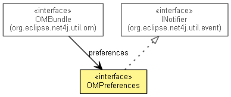

org.eclipse.net4j.util.om.pref
Interface OMPreferences
- All Superinterfaces:
- INotifier
public interface OMPreferences
- extends INotifier

- No Implement
- This interface is not intended to be implemented by clients.
- No Extend
- This interface is not intended to be extended by clients.
DEFAULT_BOOLEAN
static final boolean DEFAULT_BOOLEAN
- See Also:
- Constant Field Values
DEFAULT_INTEGER
static final int DEFAULT_INTEGER
- See Also:
- Constant Field Values
DEFAULT_LONG
static final long DEFAULT_LONG
- See Also:
- Constant Field Values
DEFAULT_FLOAT
static final float DEFAULT_FLOAT
- See Also:
- Constant Field Values
DEFAULT_DOUBLE
static final double DEFAULT_DOUBLE
- See Also:
- Constant Field Values
DEFAULT_STRING
static final String DEFAULT_STRING
- See Also:
- Constant Field Values
DEFAULT_ARRAY
static final String[] DEFAULT_ARRAY
DEFAULT_BYTES
static final byte[] DEFAULT_BYTES
getBundle
OMBundle getBundle()
isDirty
boolean isDirty()
save
void save()
init
OMPreference<Boolean> init(String name,
boolean defaultValue)
init
OMPreference<Integer> init(String name,
int defaultValue)
init
OMPreference<Long> init(String name,
long defaultValue)
init
OMPreference<Float> init(String name,
float defaultValue)
init
OMPreference<Double> init(String name,
double defaultValue)
init
OMPreference<String> init(String name,
String defaultValue)
init
OMPreference<String[]> init(String name,
String[] defaultValue)
init
OMPreference<byte[]> init(String name,
byte[] defaultValue)
initBoolean
OMPreference<Boolean> initBoolean(String name)
initInteger
OMPreference<Integer> initInteger(String name)
initLong
OMPreference<Long> initLong(String name)
initFloat
OMPreference<Float> initFloat(String name)
initDouble
OMPreference<Double> initDouble(String name)
initString
OMPreference<String> initString(String name)
initArray
OMPreference<String[]> initArray(String name)
initBytes
OMPreference<byte[]> initBytes(String name)
contains
boolean contains(String name)
get
OMPreference<?> get(String name)
getBoolean
OMPreference<Boolean> getBoolean(String name)
getInteger
OMPreference<Integer> getInteger(String name)
getLong
OMPreference<Long> getLong(String name)
getFloat
OMPreference<Float> getFloat(String name)
getDouble
OMPreference<Double> getDouble(String name)
getString
OMPreference<String> getString(String name)
getArray
OMPreference<String[]> getArray(String name)
getBytes
OMPreference<byte[]> getBytes(String name)
Copyright (c) 2004 - 2011 Eike Stepper (Berlin, Germany) and others.